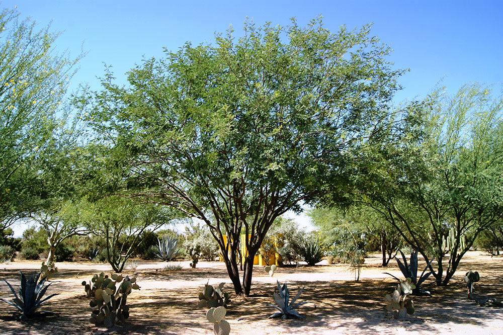
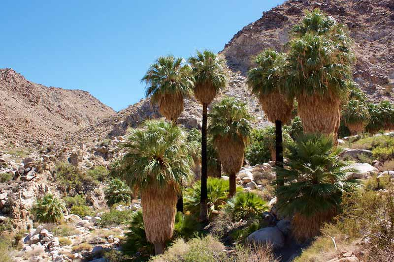
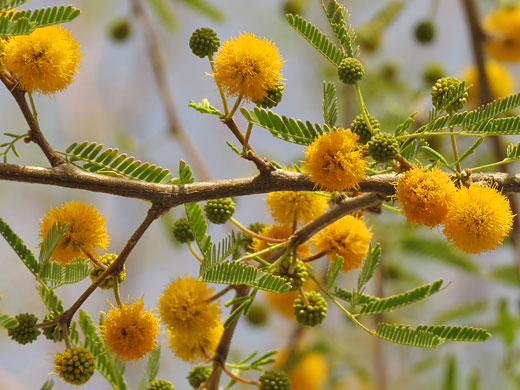
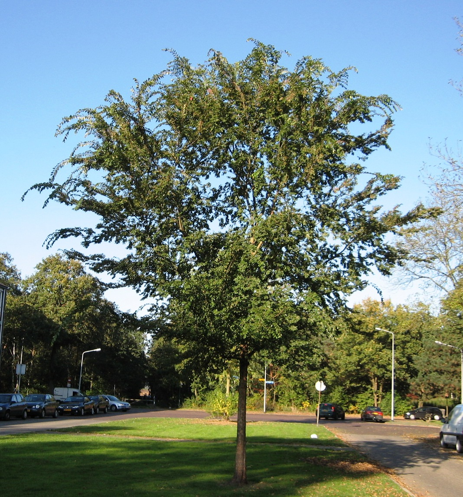
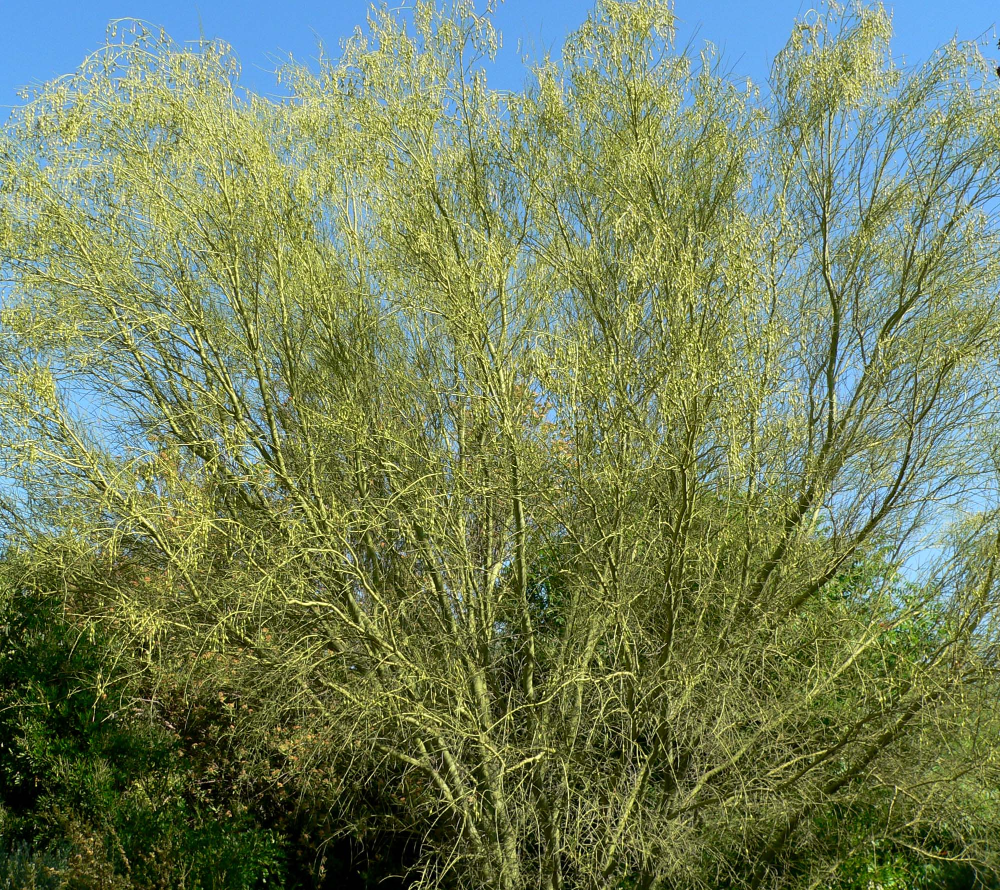
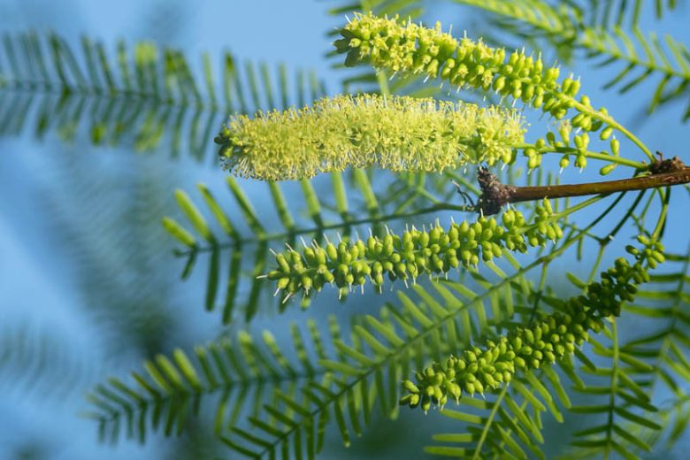
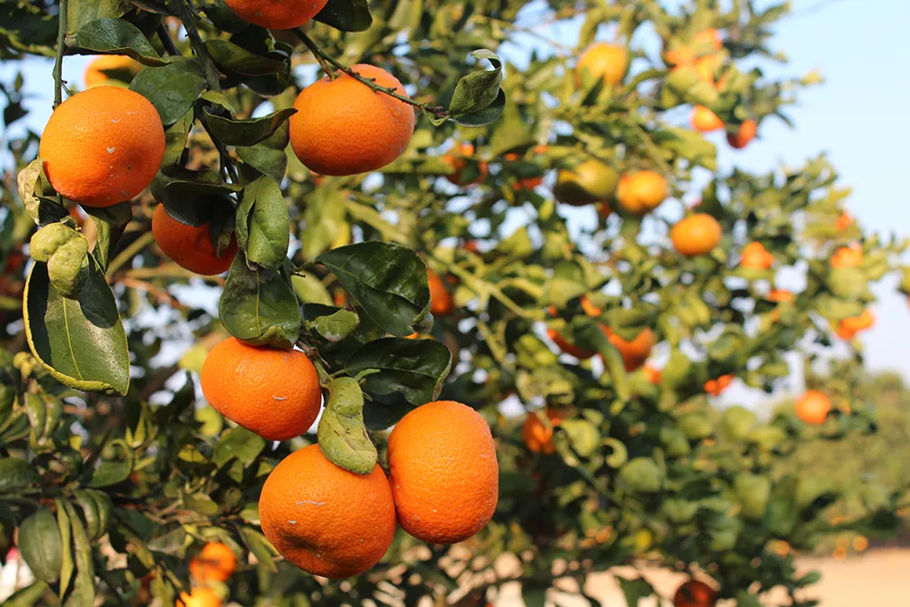
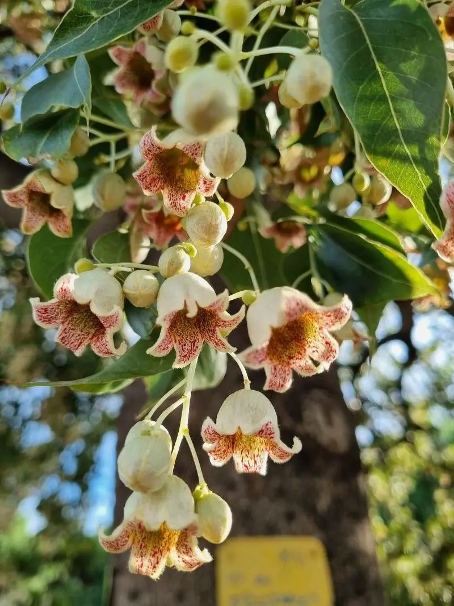
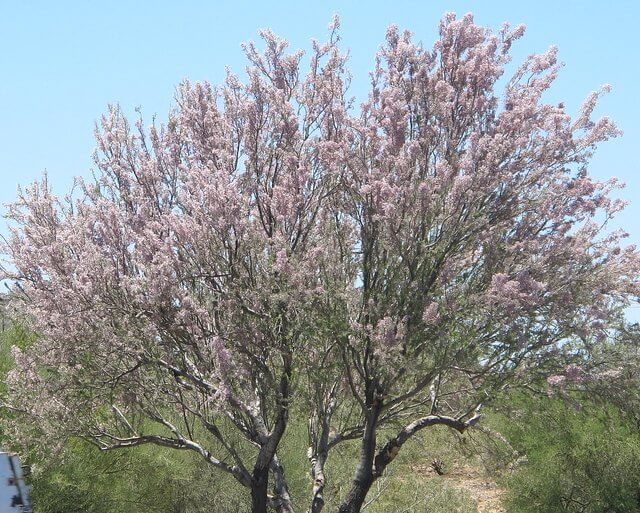

Current Koppen Climate Zone: BWk
Cold Desert (BWk) - Cold winters, hot summers, and low precipitation.
Projected Koppen Climate Zone in 2100: BWh
Hot Desert (BWh) - Extremely hot summers, mild winters, and very little precipitation year-round.
2023 Population: 678,958.
Average SUHI daytime: 0.05°C
Average SUHI nighttime: 0.75°C
Climate in 2100 Similar to current Phoenix
Urban Trees Common in Phoenix / BWh

Prosopis velutina (Velvet mesquite)

Washingtonia filifera (California fan palm)

Vachellia farnesiana (Sweet acacia)

Ulmus parvifolia (Chinese elm)

Washingtonia robusta (Mexican fan palm)

Parkinsonia microphylla (Foothill palo verde)

Prosopis glandulosa (Honey mesquite)

Citrus sinensis / Citrus limon (Sweet orange / Lemon)

Brachychiton populneus (Kurrajong)

Olneya tesota (Ironwood)